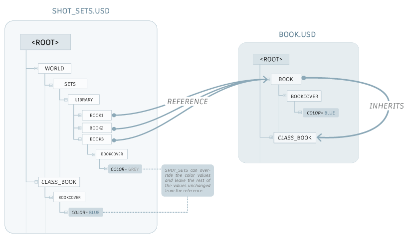
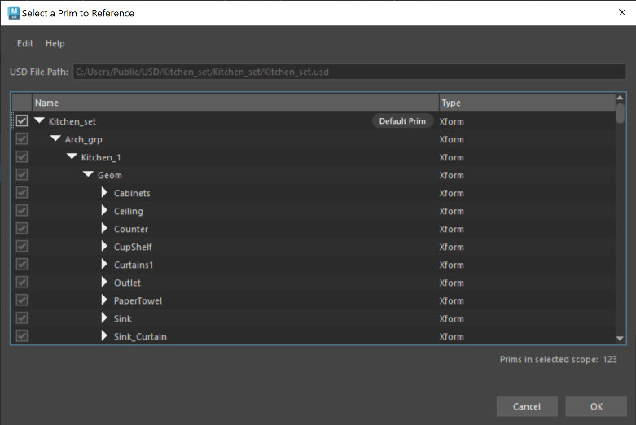
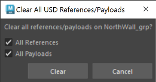
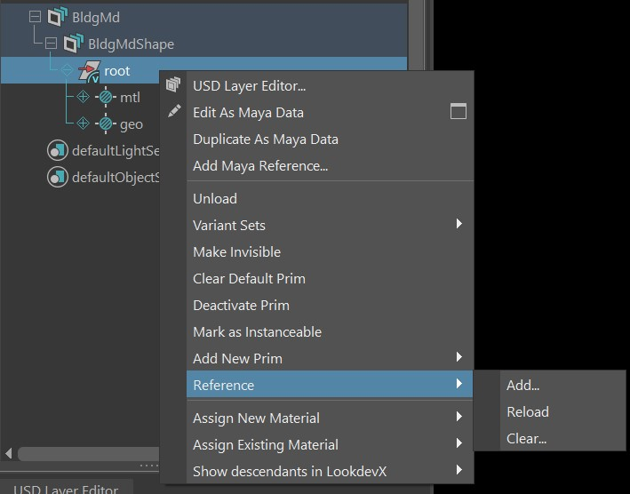

Add a reference in the Outliner
References are one mechanism that can be used to create a USD set, which is a single complex asset compiled from individual USD assets. References let you load the same layer file multiple times into a single scene in different locations, reusing scene description. This lets you load scene description (ie. a model, asset) from an external location without copying it into the contents of the layer referencing it. In the following example, shot_sets.usd is referencing the file book.usd.
Referencing is not instancing. Marking a prim as instanceable simply indicates that it can be instanced. USD decides if it is instanced or not as your scene is composed.
References are not given a type. In USD, references are typically a type-less def, which contains no information. This is useful when you reference a prim from another file, because a type-less def can easily take on a prim's type without interference.

Add a USD reference to a prim in the Outliner
Right-click the prim you want to add a reference to.
Select References > Add....
In the Add USD Reference/Payload to Prim dialog that appears, select your reference file using the file directory.
- Use the Composition Arc drop-down to choose the type of USD composition arc for your referenced USD file:
Payloads are a type of reference. They are recorded, but not traversed in the scene hierarchy. Select this arc if your goal is to manually construct a 'working set' that is a subset of an entire scene, in which only parts of the scene are required/loaded. Note that payloads are weaker than direct references in any given LayerStack.
- If you select Payload, a checkbox will appear for you to choose to Load Payload
 . If you choose to load or unload your payload determines whether or not your prim appears in the Viewport. To load or unload after this dialog, right-click the prim in the Outliner and choose Load or Unload as necessary.
. If you choose to load or unload your payload determines whether or not your prim appears in the Viewport. To load or unload after this dialog, right-click the prim in the Outliner and choose Load or Unload as necessary.
Tip: Payloads (which can be loaded/unloaded as you please) persist in memory. For example, if you unload a payload and save your Maya scene file, when you reopen your Maya scene file, the state of your payload will persist.- If you select Payload, a checkbox will appear for you to choose to Load Payload
Reference are general and can be used to compose smaller unites of scene description into larger aggregates, building up a namespace that includes the 'encapsulated' result of composing the scene description targeted by a reference. Select this arc if your goal is not to unload your reference.
- Use the List Edited As drop-down to choose how your USD reference is resolved in the LayerStack:
Prepend will add the value of the arc to the front of the resolved list. A prepended composition arc in a weaker layer of a LayerStack will still be stronger than any arcs of the same type that are appended from stronger layers.
Append will add the value of the arc to the back of the resolved list of arcs. An appended composition arc in a stronger layer of a LayerStack will therefore be weaker than all of the arcs of the same type appended from weaker layers.
For the Prim Path field, leave this field blank to use the default prim as your prim path (this is only viable if your file has a default prim). Specifying a prim path will make an explicit reference to a prim. If there is no default prim and no prim path is specified, no prim will be referenced.
Use the Select button to open the Select a Prim to Reference dialog and specify which prim you want to set as your default prim/ reference in. Use the reset button
 to refresh your prim path to what it was before you made any changes.
to refresh your prim path to what it was before you made any changes.

The reference appears in the Viewport, but it does not appear in the Outliner. When the layer that contains the prim is printed to the script editor, the reference is added to the prim.
Select Clear All USD References/Payloads... to remove the references from the Viewport. Choose what to clear from the dialog that appears.
You can save USD reference files as relative to the edit target layer directory. Enable
Make Path Relative to Edit Target Layer Directory when saving. To learn more about saving USD files relatively, see Make Path Relative.The prim you added the reference to receives an arc badge to indicate the newly attained composition arc. See USD Arc badges in the Outliner.
Reload/Clear a USD reference in the Outliner
You can reload references, payloads and nested references for prims using the context menu. To reload a reference, right-click on the prim and select References > Reload. You can also clear a reference by selecting References > Clear from the same context menu.

Add a Maya reference to a prim in the Outliner
Add a Maya reference to a USD prim to enable working with original Maya data in your USD scene. Select a Maya scene file to add as a reference. Using the Outliner contextual menu, you can add a Maya reference prim, which holds a Maya reference file that you can create and build out the scope of. Once a Maya reference file is added, a Maya transform node will appear in the Outliner at your selected prim, containing your newly added Maya reference. Use the dialog to build out the scope of your Maya reference.
- Do one of the following:
- Select a prim in the Outliner > right-click > Choose Add Maya Reference to Prim (located under Edit as Maya Data and Duplicate as Maya Data options)
- Select a stage/proxyShape node in the Outliner > right-click > Add New Prim > Add Maya Reference to Prim
- The Add Maya Reference to USD Menu appears with the following Maya reference options once you select a Maya scene file:
- Make Path Relative to Edit Target Layer Directory: Enable this toggle to activate relative pathing to your current edit target layer’s directory. Once this option is enabled, verify that your target layer is not anonymous and save it to disk so your relative path selection can be enacted. See Make Path Relative.
- Path Preview: This field previews the path of your chosen working directory for your USD file, if you have relative pathing enabled. Note: The path preview for the file can vary for each individual as the file is handed off.
- Maya Reference Prim Name:
MayaReference1(or iterated if not the first reference). You can edit this prepopulated field name to your choosing. Ensure that the reference prim name is unique. - Group: If enabled, your Maya reference will be grouped under a new prim, under your currently selected USD prim for the Maya reference.
- Prim Name: This is the prim name that your new Maya reference will be grouped under. Ensure that the group prim name is unique.
- Prim Type: Choose from this dropdown to select the prim type for grouping under, between Xform (transform node) or Scope.
- Prim Kind: Choose from this dropdown to select the kind classification for your prim. See the kind hierarchy to learn more about selection by kind. Choose from (empty), group (default), assembly, component or subcomponent.
- Define in Variant: Select this checkbox to define the Maya Reference in a USD variant. This will enable your prim to have 2 variants you can switch between in the Outliner; the Maya reference and its USD cache. Tip: Enable this setting so you can switch between the Maya reference and its USD cache in the Outliner. In this option, choose the name for your variant set and variant as needed.
- Edit as Maya Data: Select this checkbox to enable editing the MayaReference prim as a Maya Reference. By default, this is enabled so your prim is pulled upon creation.
- Make Path Relative to Edit Target Layer Directory: Enable this toggle to activate relative pathing to your current edit target layer’s directory. Once this option is enabled, verify that your target layer is not anonymous and save it to disk so your relative path selection can be enacted. See Make Path Relative.
- The following occurs:
- There is a new Maya node at the top of the reference. Underneath this node is all its children, also with the typical maya reference badge icon. These data nodes are all Maya data so Outliner branch lines are colored to reflect Maya daya (grey).
- The Maya reference node when pulled to USD will be named as per your
MayaNamespace + RN. - The Maya Reference in the USD hierarchy is editable, but locked.
Editing a Maya reference prim when pulled (Edit as Maya data)
Once your reference prim is pulled for editing as Maya data, a Maya transform node will appear in the Outliner at your selected prim, containing your newly added Maya reference. This prim has a single attribute of only being transformable, all other attributes are locked.
Once you are done editing, you will have only the following two options to proceed:
- Cancel Editing as Maya Data: This will revert your Maya reference from being in Edit as Maya mode back into a Maya reference prim, a USD object. This workflow is the equivalent of unloading a Maya reference prim.
- Cache to USD: This workflow enables you to work with Maya data in USD scenes and then export them to a USD cache and author it back into your current USD hierarchy.
Cache a Maya reference into USD
After you finish animating a Maya reference in your USD hierarchy, you can cache this Maya reference to a file on disk (export) and even back into your existing USD hierarchy as USD data. This can happen through a 'Cache to USD' dialog where you have options for the file on disk, and how to author this file on disc back to your USD hierarchy. When you cache to USD, the cache file saved to disk also writes a default prim to the file. This results in a file on disk that you can reference/ payload in.
- When a Maya reference node is pulled, on the root node of the hierarchy in USD, select the Cache to USD... option.
- Select the location on disk for your output file for export.
- Use the Cache to USD dialog to build your scope:
- Cache Options
- Edit your preferences as per the regular export options in this section. Choose settings for Output, Geometry, Materials, Animation and Advanced settings.
- Author Cache File to USD
Make Path Relative to Edit Target Layer Directory: Enable this toggle to activate relative pathing to your current edit target layer’s directory. Once this option is enabled, verify that your target layer is not anonymous and save it to disk so your relative path selection can be enacted. See Make Path Relative.
- Path Preview: This field previews the path of your chosen working directory for your USD file, if you have relative pathing enabled. Note: The path preview for the file can vary for each individual as the file is handed off.
- Note: When importing or exporting your texture file paths in USD, ensure you use the Texture File Paths toggle in the import or export dialog to ensure your paths are saved relatively.
As USD Reference: Choose the type of USD Reference composition arc for your Maya Reference:
Payloads are a type of reference. They are recorded, but not traversed in the scene hierarchy. Select this arc if your goal is to manually construct a “working set” that is a subset of an entire scene, in which only parts of the scene are required/loaded. Note: payloads are weaker than direct references in any given LayerStack.
References are general and can be used to compose smaller units of scene description into larger aggregates, building up a namespace that includes the “encapsulated” result of composing the scene description targeted by a reference. Select this arc if your goal is not to unload your references.
Define in: Select what to define your Maya reference in. In either option, you can build out the name of your USD reference.
Variant: (if available) If selected, your Maya reference will be defined in a variant. This will enable your prim to have 2 variants you can switch between in the Outliner; the Maya reference and its USD cache.
If defined in a variant, the variant will be the parent of the Maya reference, edits will be authored to your target layer and the reference composition arc (payload or general reference) will be inside your variant. Note: The maya reference node and the new
usdEditAsMayaset remains in the Outliner.Important: When the cache is behind a variant, it is considered orphaned.New Child Prim: If selected, your Maya reference will be defined in a new child prim. This will enable you to work with your Maya reference and its USD cache side-by-side.
When defined in a new child prim, it will be a sibling to the root node of the Maya reference, all edits will be on the targeted layer and the reference composition arc (payload or general reference) will be on the child prim. Note: The maya reference node and the new
usdEditAsMayaset remains in the Outliner.Important: If there are multiple roots in the Maya Reference that is cached, only the first root will be specified as the defaultPrim in the exported file. This means the exported file will have all the roots but only the default prim will be displayed in the the prim consuming the payload/general reference.
Important: When you cache a pulled Maya reference to USD, the Export File dialog appears with options for caching. These options you select will persist in Maya memory from the last time you cached and even your last Maya session. Ensure you check these setttings each time as your selections will be saved in Maya.
- Cache Options
Maya reference limitations
When a USD object is in a pulled state, a mixed-data model will be active, where the pulled object will be Maya data, yet still inside of the proxyShape node or prim. When in this state, current limitations bar selection, hierarchy and other general expected behavious. For example, if you select the USD parent node of a pulled object, the Maya data nested inside will not be a part of that selection, which will not allow operations such as hiding objects etc.
Related Concepts: For more information, see references in the Pixar USD Glossary.